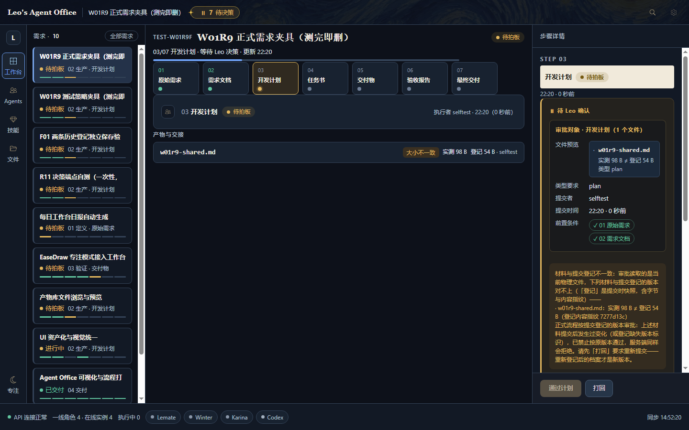
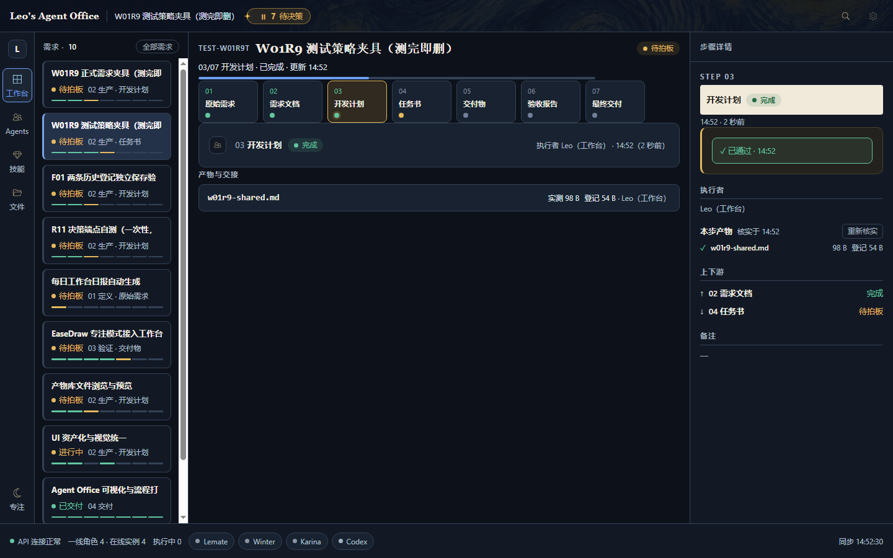
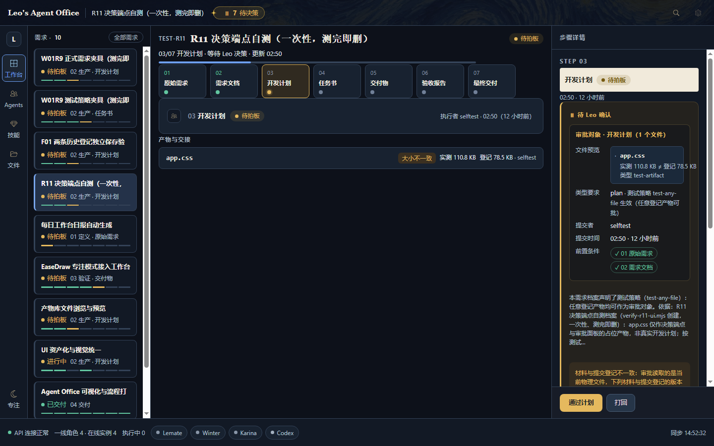

web/app.css 第 726 行区域——审批面板失败提示 .ip-decide .fb.err 由纯红字改为任务书规格块样式：
.ip-decide .fb.err {
font-size: 12px; line-height: 18px;
background: #3B3021; color: #E5B95E;
border-radius: 6px; padding: 10px;
}.ip-decide（审批卡）；fb err 全工程只有 app.js:1253 一处使用，不影响文件大小信息（.ip-file .fb）和 toast。.material-mismatch：该警示块由并行 W02 第 10 轮任务书持有（现为 #342C20/8px/12px），与本任务书规格（#3B3021/6px/10px）冲突，沿用第 8 轮报告记录待 Leo 仲裁。本轮把规格落在字面意义上的「失败提示」上，避免继续互相覆盖。夹具：TEST-W01R9F（正式，kind='plan'）与 TEST-W01R9T（test-any-file，kind='test-artifact'）登记同一个共享文件同一份 bytes=54/sha256，唯一变量是策略声明。
| 组 | 需求 | 场景 | version-gate | decide HTTP | 档案 plan |
|---|---|---|---|---|---|
| 1 | 正式 | 未修改 | valid:true 无漂移 | 200 | done |
| 2 | 正式 | 改内容·变字节(54→98) | valid:false why:bytes | 409 | awaiting |
| 3 | 正式 | 改内容·等字节(54=54) | valid:false why:sha | 409 | awaiting |
| 4 | 测试 | 未修改 | valid:true exempt:true | 200 | done |
| 5 | 测试 | 改内容·变字节（同第 2 组漂移） | valid:true 漂移照报 | 200 | done |
| 6 | 测试 | 改内容·等字节 | valid:true why:sha 照报 | 200 | done |
0dd1e387…646087）。/api/office/decision 真实 HTTP 409 → 失败提示出现、无成功提示；备注草稿原样留存；主操作收敛为 disabled + btn-invalid-material；警示块按登记/实测原始字节叙述；档案仍 awaiting；刷新后仍 st-awaiting、警示在、按钮禁用、无假成功。


| 属性 | 任务书规格 | 实测值 |
|---|---|---|
| font-size | 12px | 12px |
| line-height | 18px | 18px |
| background | #3B3021 | rgb(59, 48, 33) |
| color | #E5B95E | rgb(229, 185, 94) |
| border-radius | 6px | 6px |
| padding | 10px | 10px |
元素实测渲染尺寸 244×146 px（1440×900 视口）。
夹具任务（TEST-W01R9F/T）与共享文件目录已删除；TEST-R11.json 恢复后 sha256 与基线逐字节一致（0dd1e387…646087）。